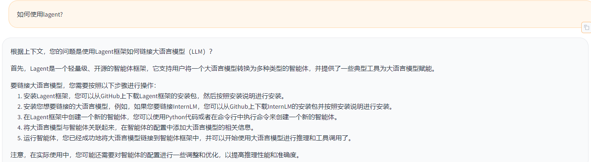

大模型实战营第三次课作业
这是大模型实战营第三次课的作业
基础作业
按照这个文档一步一步来做，得到如下结果
- 仅对前10个文档进行向量化
- 回答正确
- 幻觉
- 知识库白连接了……
- 意义不明的回答
- 对全部文档进行向量化
- 回答正确
- 幻觉似乎减轻了
- 又白连接了……
但如果一开始问他这些问题，可以回答正确

- 回答正确！
- 不接入知识库
全部回答错误且幻觉现象严重
进阶作业
- 知识库语料
我将复旦大学桂韬，张奇，黄萱菁等所著《自然语言处理导论》以及《大规模语言模型：从理论到实践》作为专业知识库语料。
- 构建向量数据库
为了读入pdf文件，我将demo create_db.py中
1 | def get_text(dir_path): |
改为
1 | def get_text(file_path): # 文件数量不多，故可直接提供路径信息，无需os.walk |
增加了PyPDFLoader
使用
PyPDFLoader之前需要运行pip install pypdf安装依赖。
同时，为了提高回答的正确性，我将demo中的RecursiveCharacterTextSplitter改为了TokenTextSplitter：
1 | text_splitter = TokenTextSplitter( |
TokenTextSplitter使用了BPE对文本进行tokenization，有助于按词义检索。
使用
TokenTextSplitter之前需要运行pip install tiktoken安装依赖。
- 接入LLM
这部分与demo相同，不再赘述
- 构建检索问答链并在开发机运行
- 使用基于模板的问答链
这是demo中的方法，代码未作改动，不再赘述。
基于模板的问答链本质是将上下文，用户给定的输入以及可能的检索结果嵌入一个给定的模板中，将该模板作为输入给LLM。这种方法仅调用LLM一次，但检索正确性较低。以下是几个问答示例：
问：根据你的知识库回答，分布式训练有什么并行策略
答：基于您提供的问题和上下文，我可以尝试回答您的问题 基于分布式训练，并行策略包括但不限于以下几个方面: 1.数据并行策略:将训练教据分割成多个批次，分配给不同的计算节点进行计算，每人计算节点计算一个批次的数据，然后将计算结果返回给主节点。 2.模型并行策略:将模型分成多个部分，每个部分分配给不同的计算节点进行训练，每个计算节点只训练其中的一部分模型。 3.混合并行策略: 数据和模型并行策略的结合，在单个计算节点上同时使用数据和模型的部分进行计算。 以上三种策略都可以有效地利用计算资源的并行性，提高训练效率，不的场景和任务可能会选择不同的策略，具体取决于数据的规模、模型的复杂度和计算资源的可用性等因素。
2）
问：根据你的知识库回答，语义表示有多少种可用的方法?
答：以下是根据提供的上下文信息和新的上下文信息更新后的答案:语义表示有许多可用的方法，包括但不限于词、助概为施事、受事咨、方位、工具格等语义深格，具体方法包括但不限于实体鞋接、概念配、关系抽与分类、句法分析、组合模型训陈等。例如，对于“复旦大学所在城市的人口有多少?”这一问句，语义解析的具体过程如图12.28所示。
3）
问：什么是预训练语言模型?
答：基于Transformer的大规模预训练语言起成为了自然语言处理的新主流，具有通用和强大的自然语言表示能力，可以帮助学习词汇、语法和语义信息，使用预训练语言模型，在微调模型时，不需要了解特定的任务细节，只黑要使用具体任务的标注数据对预训练语言模型进行监督训练，就可以取得显著的性能提升，这类方法被称为预训练语言模型，目前，全球最大的语言模型 GPT-3 拥有1750亿个参数。
- 使用基于Refine的问答链
Refine 文档链对于每一个文档会调用一次 LLM，但有所改进的是，我们每次发送给 LLM 的最终提示是一个序列，这个序列会将先前的响应与新数据结合在一起，并请求得到改进后的响应。因此，这是一种类似于 RNN 的概念，我们增强了上下文，从而解决信息分布在不同文档的问题。但这也造成检索时间较长的问题。测试时每次生成答案都需要20s以上。
使用基于Refine的问答链还是会有以下问题：
- 幻觉现象
问：好的，目前有哪些主流的预训练语言模型？
答：好的，以下是根据您的要求对原有回答的修订版：
目前有许多主流的预训练语言模型，以下是其中的一些：
- BERT (Bidirectional Encoder Representations from Transformers)
- GPT (Generative Pre-trained Transformer)
- RoBERTa (Robustly Optimized BERT Pretraining Approach)
- XLNet (eXtreme Multi-task Learning Network)
- BART (Bidirectional and Asynchronous Reranking Transformers)
- ALBERT (A Lite BERT)
- Transformer-XL (Long-Text CTR Transformer)
- GShard (Graph Neural Network-based Shared Distributed Transformers)
- Doc2Seq (Document-to-Sequence with Encoder Network)
- NavDeepLM (Natural Language Processing with Neural Networks)
- BigBERT (Bidirectional Encoder Representations from Transformers)
- T5 (Text-to-Text Transfer Transformer)
- ELMo (Embeddings from Language Models)
- ULMFiT (Universal Language Model Fine-tuning)
- MoCo (Multi-Instance Correlation for Text Generation)
- LJBERT (Language Models are Few-Shot Learners)
- KERMIT (Knowledge Enhanced Representation Model for Information Retrieval)
- Pix4LM (Pixel-to-Language with Language Modeling)
- CRNN (Cross-Transformer Recursive Neural Network)
- GPM (Graph Processing Method)
- NanoModel (Neural Network for Fine-tuning the Microstructure of Text)
- YAGO (Yet Another Good Ontology)
- OpenIE (Open Information Extraction)
- YAM (Yet Another Multilingual Model)
- RACE (Recursive Neural Context Architecture for Sentencing)
- DeepSmooth (Deep Models with Smoothed Poissonization for Language Generation)
- XLM (Cross-lingual Language Model)
- ULMFiT-Cross
- GPT-2 (Generative Pre-trained Transformer 2)
- GPT-3 (Generative Pre-trained Transformer 3)
- GPT-4 (Generative Pre-trained Transformer 4)
- GPT-5 (Generative Pre-trained Transformer 5)
- GPT-6 (Generative Pre-trained Transformer 6)
- GPT-7 (Generative Pre-trained Transformer 7)
- GPT-8 (Generative Pre-trained Transformer 8)
- GPT-9 (Generative Pre-trained Transformer 9)
- GPT-10 (Generative Pre-trained Transformer 10)
- GPT-11 (Generative Pre-trained Transformer 11)
- GPT-12 (Generative Pre-tr
- 相近知识混淆（LoRA, Low Rank Adaptation 和LoRa, Long Range）
问：根据你的知识库回答，什么是LoRA?
答：LoRa是一种低功耗广域网（Long Range Wireless）的通信技术，它是一种基于无线电技术的无线通信技术，通常用于连接低功耗设备并与物联网应用进行通信，以实现远程监控、远程控制等功能。LoRa技术的特点是低功耗、低成本、长距离、低速率等，因此在许多应用场景中都有很好的表现，例如智能家居、智能农业、智能交通等。
问：什么是LOW-RANK ADAPTATION
答：LOW-RANK ADAPTATION (低秩适应) 是一种机器学习技术，它通过在模型训练过程中利用低秩性质来优化模型性能。其具体实现方式是在模型训练过程中加入一些限制，使得模型的参数矩阵近似于一个低秩矩阵。这种方法可以帮助减少计算量，提高模型性能，同时保留原有的模型效果。在实际应用中，LOW-RANK ADAPTATION 可以应用于各种机器学习任务中，例如文本生成、图像处理、语音识别等。
- OpenXLab部署
按照此文档引导进行上述应用的部署，部署成功截图：
点击此处访问。